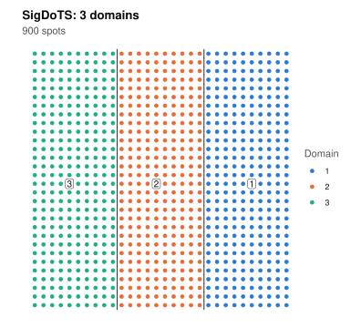
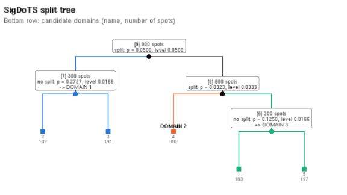

Domain-detection methods divide a tissue into as many domains as they are asked for. SigDoTS tests which of these domains the data support:
- It starts from more candidate domains than you expect.
- It arranges them in a tree and tests each split against a single-domain model.
- It keeps a split only if it is significant, with error control over the whole tree.

The three steps of SigDoTS (Figure 1c of the paper).
Key features
-
Tests, not thresholds. Every retained split has passed a test against a single-domain null model that includes within-domain spatial correlation and gene-gene covariance; the family-wise error rate over all tests is controlled at
alpha(0.05 by default). - Accounts for selection. The same clustering procedure that produced the candidate domains is applied to every simulated dataset, so the “separation that clustering always finds” is part of the reference distribution.
-
Works with your objects. Takes a Seurat object, a SpatialExperiment object, or plain matrices; writes the domains back with
add_domains(). -
Works with your pipeline. Start from the built-in k-means, from BANKSY or BayesSpace, or from any labels you already have (
candidate_labels). -
Readable results.
print()draws the tested tree in the console;summary()lists every test with its statistic, p-value and level;plot()draws the domains, the candidate domains, the tree and the estimated spatial correlation. - Reproducible and parallel. Same data, arguments and seed give the same result on any number of cores.
- Scales. A Vecchia approximation (default) keeps memory roughly linear in the number of spots; the exact computation is available for smaller samples.
Installation
SigDoTS needs R 4.3.0 or later. It depends on the CRAN packages GpGp, fields, igraph, Matrix, RANN and ggplot2, which are installed automatically when SigDoTS is installed from GitHub.
# install.packages("remotes")
remotes::install_github("Yan-Lab-MSU/SigDoTS")Or from a downloaded package file (the dependencies are then not installed automatically):
install.packages(c("GpGp", "fields", "igraph", "RANN", "ggplot2"))
install.packages("path/to/SigDoTS_0.2.5.8.tar.gz", repos = NULL, type = "source")On a new computer, installing the dependencies takes a few minutes; SigDoTS itself installs in seconds and contains no compiled code. GpGp does, but on Windows and macOS CRAN provides a ready-made binary of it, so no compiler is needed.
On Linux, igraph needs the GLPK library of the operating system. If library(SigDoTS) stops with “libglpk.so.40: cannot open shared object file”, install the system libraries igraph uses and then igraph again, for example on Ubuntu or Debian:
(on Fedora: sudo dnf install glpk-devel gmp-devel libxml2-devel).
Tested on Windows, macOS and Linux: R CMD check --as-cran passes on Windows (R 4.6.2), macOS (R 4.6.2, Apple silicon) and Ubuntu (R 4.5.3, R 4.6.2 and the development version of R) on GitHub Actions, and in clean Ubuntu 24.04 containers with R 4.6.1; the package also runs with R 4.3.2, R 4.4.2 and R 4.5.1 on Linux.
Optional, only to make the candidate domains with BANKSY or BayesSpace:
install.packages("BiocManager")
BiocManager::install(c("Banksy", "SingleCellExperiment", "SummarizedExperiment")) # or "BayesSpace"Quick start
The package includes a small simulated dataset: 900 spots on a 30 x 30 grid, 200 genes, three true domains of 300 spots each.
library(SigDoTS)
dim(sigdots_example$x) # spots x genes
#> [1] 900 200
fit <- sigdots(sigdots_example$x, sigdots_example$coords, K0 = 5)
#> SigDoTS: 900 spots, 200 genes; 5 candidate domains; testing from the top of the tree
#> test at node 9 (900 spots, 5 candidate domains): split (19 simulated datasets) [11 s]
#> test at node 7 (300 spots, 2 candidate domains): no split (10 simulated datasets) [2 s]
#> test at node 8 (600 spots, 3 candidate domains): split (30 simulated datasets) [7 s]
#> test at node 6 (300 spots, 2 candidate domains): no split (15 simulated datasets) [2 s]
fit
#> SigDoTS: 900 spots, 200 genes
#> Number of domains: 3 (spots per domain: 300, 300, 300)
#>
#> Split tree ([node] spots, candidate domains: decision):
#> [9] 900 spots, candidate domains 1,2,3,4,5: split
#> ├── [7] 300 spots, candidate domains 2,3: no split => DOMAIN 1
#> │ ├── candidate domain 2 109 spots
#> │ └── candidate domain 3 191 spots
#> └── [8] 600 spots, candidate domains 1,4,5: split
#> ├── [4] 300 spots, candidate domain 4 => DOMAIN 2
#> └── [6] 300 spots, candidate domains 1,5: no split => DOMAIN 3
#> ├── candidate domain 1 103 spots
#> └── candidate domain 5 197 spots
#>
#> Use summary() for the tests.The three domains match the three true regions:
table(domain = domains(fit)$domain, true_region = sigdots_example$region)
#> true_region
#> domain 1 2 3
#> 1 0 0 300
#> 2 0 300 0
#> 3 300 0 0
plot(fit)
plot(fit, type = "tree")
summary(fit) adds a table of the tests (statistic, number of simulated datasets, p-value, level, decision). The Getting started tutorial explains every line of this output.
Input data format
sigdots() takes the data in the form you have it:
| You have | Call |
|---|---|
| a Seurat object (normalised, with variable genes set) | sigdots(obj, K0 = 10) |
a SpatialExperiment object (with a logcounts assay) |
sigdots(spe, K0 = 10, genes = hvg) |
| a raw counts matrix (genes x spots) and a coordinate table | sigdots(sigdots_prepare(counts), xy, K0 = 10) |
| a normalised expression matrix (spots x genes) and coordinates | sigdots(x, xy, K0 = 10) |
plus one number, K0, the number of candidate domains (more than the number of domains you expect). Instead of K0 you can give your own over-segmentation with candidate_labels, a vector or the name of a metadata column. add_domains(obj, fit) writes the domains back into a Seurat or SpatialExperiment object. See Using SigDoTS on your own data.
Tutorials
- Getting started: the demo above, line by line.
- Real data application: a public Visium section of human brain cortex with manually labelled layers, from download to the domains, and one layer analysed on its own.
- Using SigDoTS on your own data: the five input forms (Seurat, SpatialExperiment, Scanpy file, counts, matrices), the choice of the candidate domains, exact or approximate spatial computation, run time and memory.
- Troubleshooting and FAQ: every error and warning the package can give, and what to do.
- How SigDoTS works: the method step by step, without formulas.
All but the real-data application are also installed with the package: vignette("SigDoTS"), vignette("own-data"), vignette("faq"), vignette("how-it-works").
How long does it take?
Measured in the paper’s scalability experiment (simulated data with 2,000 genes and three domains, K0 = 5, exact spatial computation, 10 cores; mean of 2 datasets per size; peak memory of the whole run including the 10 worker processes):
| Spots | Run time | Peak memory |
|---|---|---|
| 400 | 14 s | 2.7 GiB |
| 900 | 32 s | 3.5 GiB |
| 1,600 | 2.0 min | 5.3 GiB |
| 2,500 | 4.3 min | 6.1 GiB |
| 5,041 | 9.2 min | 9.6 GiB |
| 10,000 | 18 min | 19.8 GiB |
With the default Vecchia approximation, 2,500 spots took a median of 4.0 minutes on three-domain data and 1.4 minutes on one-domain data (10 cores, 680 datasets). Beyond about 20,000 spots use the Vecchia approximation: the exact computation at 50,176 spots took 12 hours and 206 GiB.
How SigDoTS works, in brief
-
Candidate domains. k-means on the first 15 principal components (or BayesSpace, BANKSY, or your own labels) divides the spots into
K0candidate domains. - Tree. Groups that touch in space are merged pairwise, the most similar first (Ward’s criterion on the candidate domains’ means in the first 15 principal components), into a binary tree.
-
Tests from the top. At each split, the statistic is the within-group sum of squares divided by the total sum of squares, over all genes (smaller means a clearer split). A single-domain model is fitted to the spots of that part of the tree: a matrix-normal model whose spatial correlation (strength
eta, rangeell, Matérn 3/2) is estimated from pairs of spots within the same candidate domain, and whose gene covariance is estimated after removing each candidate domain’s mean. Datasets simulated from it are clustered in the same way, and the p-value is (1 + the number of them that split at least as clearly as the data) / (1 + the number of simulated datasets); a normal approximation that needs fewer simulated datasets is available (pvalue_method = "normal_adaptive"). A test on m of the n spots uses the levelalpha * (m - 1) / (n - 1). - Domains. A part is split only when its test is significant; otherwise it is a domain.
Citation
Manuscript in preparation. Until it is published, please cite the package: citation("SigDoTS").
Licence and contact
SigDoTS is released under the MIT licence (LICENSE.md). Questions and bug reports: open an issue on GitHub, or write to the maintainer (maintainer("SigDoTS")).